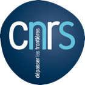
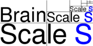
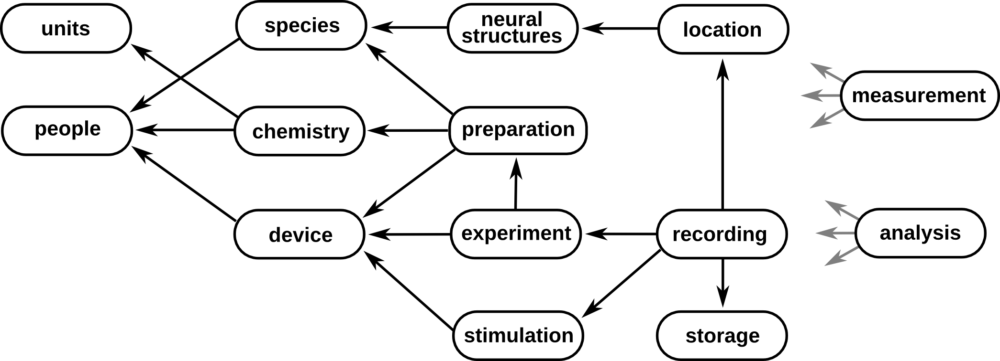
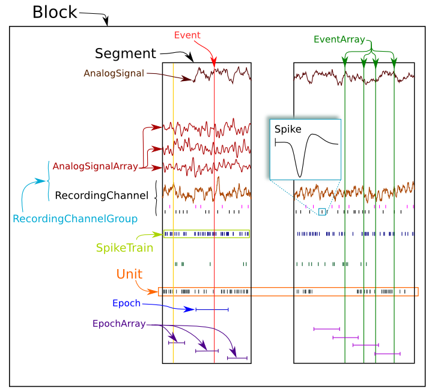
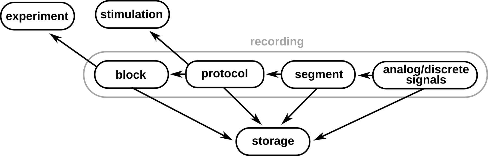
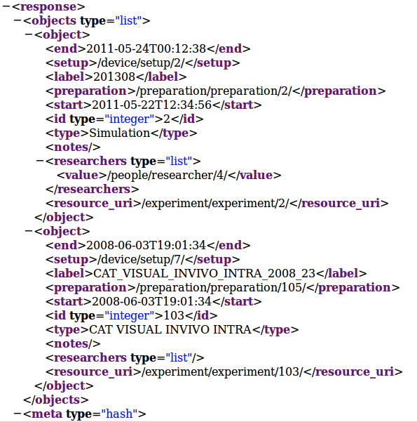
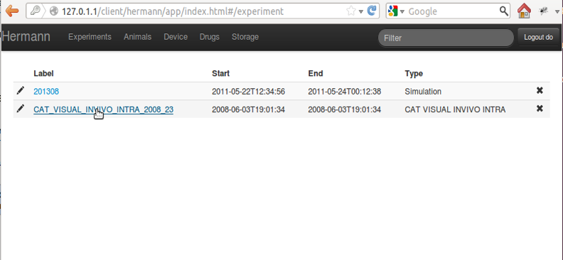
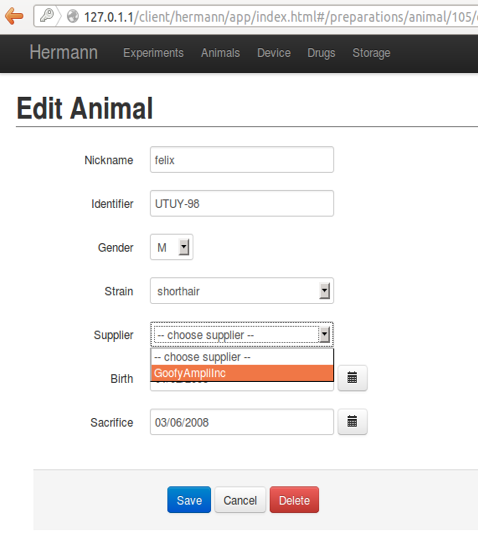

Databasing of experimental neurophysiology data together with the annotations/metadata needed to understand it promises major payoffs both for the scientists who generate the data and for the progress of neuroscience in general.
However, systematically putting the annotations and other metadata into a digital form is generally an arduous task at present, and the benefits difficult to realize, so that the cost/benefit ratio for the experimentalist is a poor one, with the corollary that the flow of data shared with the broader community is more a trickle than a flood.
To improve this situation requires tools that make it easier for neuroscientists to put their data into a database, to annotate it appropriately, to obtain some immediate benefit from the effort, and to share the data with others, under terms they control, if they so wish.
Here we present Helmholtz, an open-source framework for developing databases that are customized to the needs of individual neurophysiology labs, named after the 19th century physicist and physiologist Hermann Ludwig Ferdinand von Helmholtz for his work on perception and in the hope that we can contribute to the conservation of energy in neuroscience :)
The tension between immediate benefit in having a better tool for scientists to manage their own data and longer-term considerations of sharing with others has several implications:
The framework is built on top of the Django web framework (http://www.djangoproject.com/). The advantages of using a web framework are:
Helmholtz provides core components which handle elements that are common to all or many domains of neurophysiology. For example, information about data acquisition: metadata for experimental setups (equipment, etc.), subjects (species, weight, anaesthesia, surgery, etc.), stimulation and recording protocols, for electrophysiology (in vivo and in vitro), optical imaging and morphological reconstructions.
A generic form of referencing supports databasing of measurements and analysis methods and steps, which can be linked to any object in the database, supplying the first building block for additional operations.
Each component of the structure is represented as a Django application and has a database table associated with it.

Extension components to support the specific needs of individual labs are straightforward to write, requiring minimal programming experience.

In order to explain the principles underlying Helmholtz architecture, let's take a closer look at the central data structures representing metadata associated with recordings.
Following interoperability directions, Helmholtz structures for recording metadata mirror those in Neo, a python package for representing hierarchies of electrophysiology data and metadata, together with support for reading and writing a wide range of neurophysiology file formats, including Spike2, NeuroExplorer, AlphaOmega, Axon, Blackrock, Plexon, Tdt, Matlab and HDF5.
A direct mapping of Neo's object at attribute level exists among Block, Segment (with reference to the protocol presentation), analog and discrete Signals, the actual recordings.
These objects are integrated seamlessly into Helmholtz architecture, by including references to the experiment and stimulation metadata that generated the recordings, as well as the storage location of files containing the recordings.

Following deployment of the web-services API for the BrainScaleS database, the next steps are:
To populate, inspect and change the metadata, Helmholtz users have several options ranging from python interactive shell to self-developed ones. Let's take a look at some of them...
An experimental setup is defined by its location and the various devices that makes it up:
>>> from helmholtz.devices.models import Setup, SubSystem
>>> amps = SubSystem(label="amplifiers")
>>> amps.save()
>>> amps.device.add(my_amp)
>>> amps.save()
>>> vis = SubSystem(label="visualisation")
>>> vis.save()
>>> my_setup = Setup(place=my_lab, room="C253")
>>> my_setup.save()
>>> my_setup.subsystems.add(amps, vis)
>>> my_setup.save()
Once the general information about the experimental setup are stored in Helmholtz, a new Experiment object can be created:
>>> from helmholtz.devices.models import Setup
>>> from helmholtz.people.models import Researcher
>>> setup = Setup.objects.get(room="B254")
>>> researchers = Researcher.objects.filter(first_name__in=["Alice", "Bob"])
>>> expt = Experiment(label=datetime.now().strftime("%F"), start=datetime.now(), setup=setup)
>>> expt.save()
>>> expt.researchers.add(*researchers)
>>> expt.save()
Of course, several other elements could be included in the description, like animal characteristics, drugs applications, preparation properties ...
We decided to implement a web-services API using a RESTful architecture, so to see the database as a collection of resources, each of which is referenced with a globally unique identifier (URI).
A client that wishes to obtain information from the database sends an HTTP GET request to the URL of the resource of interest, and receives a representation of that resource. This representation could be in several different formats. The Helmholtz API supports XML, JSON, YAML, odML and HTML. The preferred format is included as part of the query or as part of the URL.
As an example, a query to:
https://www.dbunic.cnrs-gif.fr/visiondb/experiments/?format=xml
Several features can already be noted from this example:
$ curl --dump-header - -H "Content-Type: application/json" \
-X GET https://www.dbunic.cnrs-gif.fr/visiondb/experiment/experiment/
{
"id": 103,
"label": "CAT VISUAL INVIVO INTRA 2008 23"
}To create a new resource in the database, the client sends an HTTP POST request, and return to the client the URL of the new resource. Finally, an HTTP DELETE request can be used to delete a resource.
The amount of data stored can rapidly grow and be overwhelming, not only for humans but also for automatic treatment. Here we show how easy is to add some filtering criteria using the API. For example, here we ask for the subset of Drifting Grating stimuli that have contrast 10%:
>>> import requests
>>> adds = {'contrast': '10.00 \%'}
>>> heads = { 'Authorization': 'Basic ZG86ZG8=' }
>>> r = requests.get('https://www.dbunic.cnrs-gif.fr/visiondb/stimulation/driftinggratingstimulus/', params=adds, headers=heads)
>>> r.status_code
200
>>> r.text
{"objects": [
{
"contrast": "10.00 \%",
"resource_uri": "/stimulation/driftinggratingstimulus/4/",
},
... other objects
]
}Using the Python requests library, it is easy to interact with the API, but please note that we do not expect users to interact with the database at such a low level. Rather, tool developers will wrap the API interaction within a graphical interface or within a programming-language-specific high-level library.  
Using this API and AngularJS, a ready-to-use electronic lab notebook is under construction and it will be deployed together with the rest of Helmholtz code: